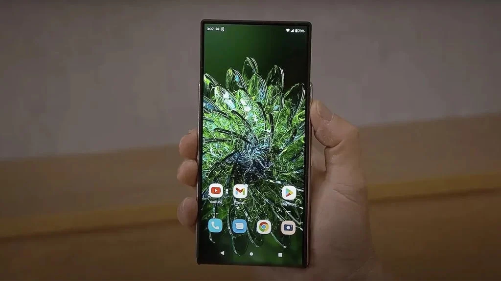
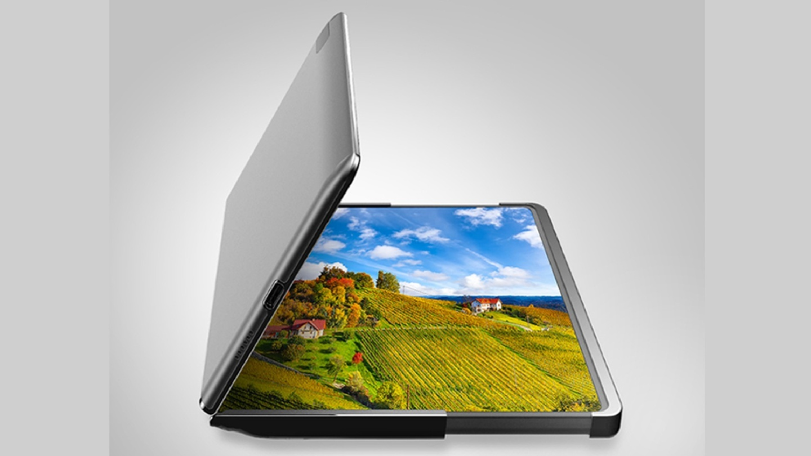
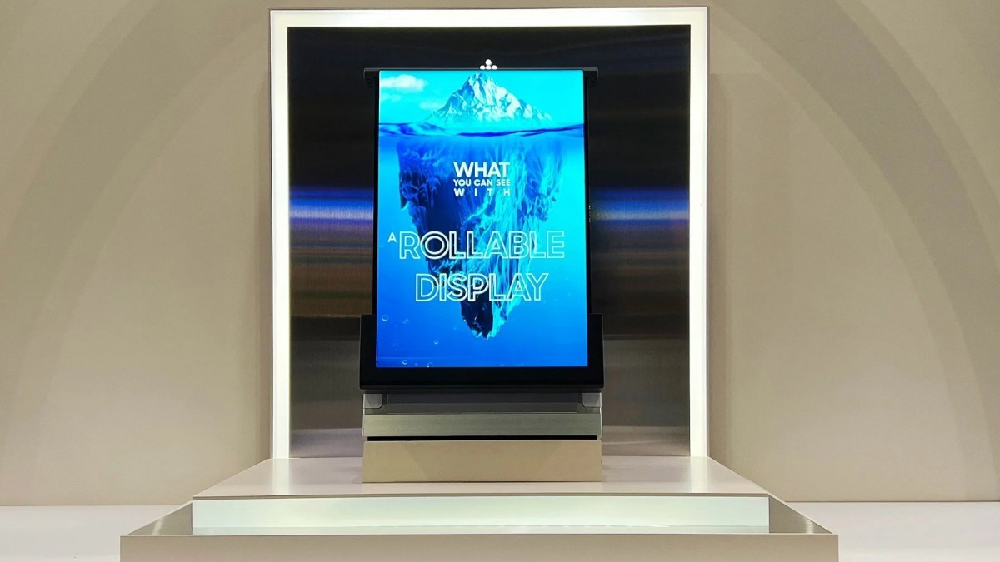
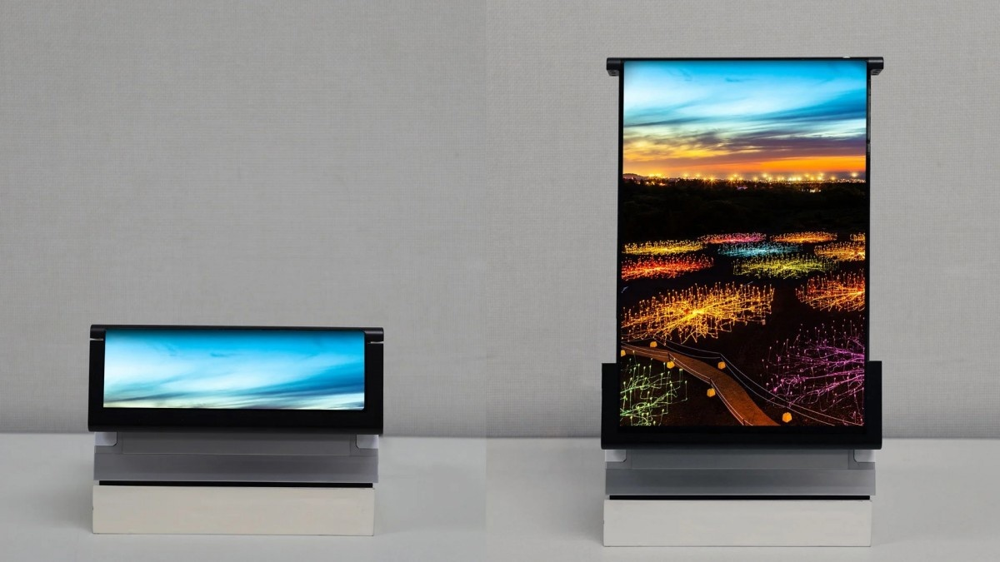

시장 동향
IT홈의 보도에 따르면, 한국 매체인 매일경제신문사가 어제(6월 26일) 게시한 글에서 Samsung Display가 롤러블 디스플레이 시장 공략을 추진 중이며, 2028년 Galaxy S28 시리즈와 함께 최초의 상용화된 롤러블 스마트폰을 출시할 계획이라고 보도했습니다.
해당 매체는 롤러블 스마트폰이 현재 초기 단계에 있으며, 공급망에 먼저 진입하는 업체가 향후 기술 표준과 고객 자원을 확보할 가능성이 높다고 지적했습니다. 폴더블 디스플레이와 비교했을 때, 롤러블 디스플레이는 구조가 더 복잡하고 기술적 장벽이 높아 초기 시장은 기술 축적이 깊은 제조사가 주도할 가능성이 큽니다.
점유율 변화 및 전망
폴더블 디스플레이 시장의 변화로 인해 Samsung은 새로운 전장을 찾고 있습니다. Omdia에 따르면, Samsung Display의 폴더블 스마트폰 패널 출하 점유율은 다음과 같이 변동되었습니다.
- 2025년 4분기: 41.8%
- 2026년 1분기: 27%
시장 조사 기관인 Omdia는 Samsung의 첫 번째 롤러블 스마트폰이 Galaxy Z Slide라는 명칭으로 출시될 것으로 예상했으며, 다음 사양을 탑재할 것으로 전망했습니다.
- 화면 크기: 10인치
- 화면 비율: 16:9
- 해상도 밀도: 440.6ppi
또한, 해당 모델은 2030년부터 후속 기종을 지속적으로 출시할 것으로 예상됩니다.
기술적 과제
상용화 측면에서 롤러블 디스플레이의 가장 큰 난제는 '안정적인 말림'입니다. 패널이 반복적으로 수축 및 확장될 때 지속적인 굽힘과 인장력을 견뎌야 하며, 펼쳐진 상태에서도 평탄도와 표시 일관성을 유지해야 합니다. 또한 내부 롤러, 보강 구조, 두께 및 무게의 균형을 조절해야 하며, 이 중 어느 하나라도 균형이 깨지면 양산 난도가 높아집니다.
기존 기술 사례
Samsung Display는 2023년 CES 기간 동안 폴더블과 슬라이딩 기능을 결합한 Flex Hybrid를 선보였으며, 이후 SID 2023에서 화면을 5배 이상 확장할 수 있는 Rollable Flex(49mm에서 254.4mm로 확장)를 공개했습니다.
총평
Samsung Display는 폴더블 시장의 변화에 대응하기 위해 롤러블 디스플레이 기술 확보에 집중하고 있으며, 2028년 Galaxy S28과 함께 상용화된 제품을 출시할 계획입니다. 성공적인 양산을 위해서는 내구성과 구조적 균형 등 해결해야 할 핵심 기술 과제들이 남아 있습니다.
市场布局与时间线
Samsung显示正积极推动卷轴屏技术的商业化。根据相关报道，计划于2028年随Galaxy S28系列手机首次推出商用卷轴手机。由于卷轴屏结构复杂且技术门槛高于折叠屏，早期进入供应链的厂商将更易获得核心技术标准与客户资源。
市场驱动因素
随着折叠式显示技术的成熟，Samsung正寻求新的增长点。Omdia数据显示，Samsung在折叠手机面板的出货份额预计从2025年第4季度的41.8%下降至2026年第1季度的27%，这促使公司加速布局卷轴屏市场。
产品预测与技术挑战
市场调查机构Omdia对首款卷轴手机（预计命名为Galaxy Z Slide）给出了相关参数预估：
- 屏幕尺寸：10 英寸
- 屏幕比例：16:9
- 像素密度：440.6ppi
- 后续计划：预计在2030年继续推出后续机型
卷轴屏的商用难点在于“卷得稳”，即在反复收放过程中保持结构稳定性，并确保展开后的平整度与显示一致性。此外，厂商还需在内部滚轴、加固结构、厚度与重量之间寻找平衡。
技术演进回顾
Samsung已在相关展会展示过相关原型技术：
- Flex Hybrid：融合折叠与滑动能力。
- Rollable Flex：可将画面从49毫米扩展到254.4毫米，扩大范围超过5倍。
总结
Samsung计划于2028年通过Galaxy S28系列推动卷轴屏的商业化落地，旨在应对折叠式面板市场份额下滑带来的挑战。该技术路线要求在复杂的机械结构与显示一致性之间取得平衡，是其在高端移动设备领域的重要战略布局。
市場動向
ITホームの報道によると、韓国メディア「毎日経済新聞」が6月26日に報じた内容で、Samsung Displayはロールアブル（巻取り式）ディスプレイ市場への参入を推進しており、2028年のGalaxy S28シリーズと同時に初の商用ロールアブルスマートフォンを発売する計画である。
同メディアは、ロールアブルスマートフォンが現在初期段階にあり、サプライチェーンに早期参入する企業が将来的な技術標準や顧客リソースを獲得する可能性が高いと指摘しています。フォルダブルディスプレイと比較して構造がより複雑で技術的障壁が高いため、初期市場は高度な技術蓄積を持つメーカーが主導する見通しです。
シェアの変化と展望
フォルダブルディスプレイ市場の変化に伴い、Samsungは新たな戦場を模索しています。Omdiaのデータによると、Samsung Displayのフォルダブルスマートフォンパネル出荷シェアは以下のように推移すると予測されています。
- 2025年第4四半期：41.8%
- 2026年第1四半期：27%
市場調査機関のOmdiaは、Samsungの最初のロールアブルスマートフォンを「Galaxy Z Slide」という名称で発売すると予想しており、以下のスペックを備えると予測しています。
- 画面サイズ：10インチ
- アスペクト比：16:9
- 画素密度：440.6ppi
また、同モデルは2030年から後続機種を継続的に投入する見込みです。
技術的課題
商用化におけるロールアブルディスプレイの最大の難関は「安定した巻き取り」です。パネルが繰り返し伸縮する際に持続的な曲げや引張力に耐える必要があり、展開された状態でも平坦度と表示の一貫性を維持しなければなりません。さらに、内部ローラー、補強構造、厚みと重量のバランスを調整する必要があり、これらのいずれか一つでも均衡が崩れれば量産難易度が大幅に高まります。
既存技術の事例
Samsung Displayは2023年のCES期間中に、フォルダブルとスライディング機能を組み合わせたFlex Hybridを発表しました。その後、SID 2023において、画面を5倍以上拡張できるRollable Flex（49mmから254.4mmまで拡張）を公開しています。
まとめ
Samsung Displayはフォルダブル市場の動向を受け、ロールアブルディスプレイ技術の確保に注力しており、2028年のGalaxy S28と同時に商用製品の投入を目指しています。量産に向けた成功には、耐久性や構造的なバランスなど、解決すべき重要な技術的課題が依然として残っています。
Market Trends
According to a report by IT Home, an article published by Maiel Business News on June 26 stated that Samsung Display is pushing into the rollable display market. The company plans to launch its first commercialized rollable smartphone in 2028 alongside the Galaxy S28 series.
The media noted that while rollable smartphones are currently in their early stages, companies that enter the supply chain early are more likely to secure future technical standards and customer resources. Compared to foldable displays, rollable displays have more complex structures and higher technical barriers; therefore, the initial market is expected to be dominated by manufacturers with deep technological expertise.
Market Share Changes and Outlook
Due to shifts in the foldable display market, Samsung is seeking new frontiers. According to Omdia, Samsung Display's shipment share for foldable smartphone panels has fluctuated as follows:
- Q4 2025: 41.8%
- Q1 2026: 27%
Market research firm Omdia predicts that Samsung's first rollable smartphone will be released under the name "Galaxy Z Slide" and is expected to feature the following specifications:
- Screen Size: 10 inches
- Aspect Ratio: 16:9
- Pixel Density: 440.6ppi
Additionally, it is expected that successor models will be released continuously starting from 2030.
Technical Challenges
In terms of commercialization, the biggest hurdle for rollable displays is "stable rolling." The panels must withstand continuous bending and tension during repeated contraction and expansion while maintaining flatness and display consistency even when unfolded. Furthermore, balancing internal rollers, reinforcement structures, thickness, and weight is critical; if any of these elements fall out of balance, the difficulty of mass production increases significantly.
Existing Technology Cases
During CES 2023, Samsung Display showcased the Flex Hybrid, which combines foldable and sliding functions. Subsequently, at SID 2023, they unveiled the Rollable Flex, which can expand the screen by more than five times (from 49mm to 254.4mm).
Summary
Samsung Display is focusing on rollable display technology as a new growth engine following shifts in the foldable market, with plans for a commercial launch alongside the Galaxy S28 in 2028. While technical hurdles regarding durability and structural balance remain, the company has already demonstrated foundational technologies like Rollable Flex. The first model, potentially named Galaxy Z Slide, is expected to feature a 10-inch display.
市场布局与战略背景
Samsung显示正积极推动卷轴屏市场的布局，旨在应对折叠式显示屏市场竞争加剧带来的挑战。由于折叠手机面板出货份额在预测中出现下滑（从2025年第4季度的41.8%降至2026年第1季度的27%），Samsung正寻求新的技术高地。由于卷轴屏结构复杂、技术门槛更高，早期进入供应链的厂商将更有机会掌握后续的技术标准与客户资源。
产品路线图与预测规格
相关消息指出，Samsung计划于2028年随Galaxy S28系列手机首次推出商用卷轴手机。市场调查机构Omdia对首款可能被称为Galaxy Z Slide的机型给出了具体预估：
- 屏幕尺寸：10 英寸
- 显示比例：16:9
- 像素密度：440.6ppi
- 后续计划：预计在2030年继续推出相关后续机型。
技术挑战与研发进展
卷轴屏商用面临的主要难点在于“卷得稳”，即面板在反复收放过程中必须承受持续的弯折与拉伸，并确保展开后的平整度与显示一致性。此外，生产过程中还需平衡内部滚轴、加固结构、厚度及重量等多个维度的控制。
Samsung此前已展示过相关技术成果：
- Flex Hybrid：在CES 2023期间展示，融合了折叠与滑动能力。
- Rollable Flex：在SID 2023推出，可将画面从49毫米扩展到254.4毫米（扩大逾5倍）。
总结
Samsung正因折叠屏市场竞争加剧而加速布局卷轴屏技术，计划于2028年随Galaxy S28系列推出首款商用机型。尽管面临复杂的结构平衡与耐用性挑战，但通过前期技术的积累与展示，Samsung旨在抢占下一代显示技术的标准话语权。
市場動向
ITホームの報道によると、韓国のメディア「毎日経済新聞」が6月26日に公開した記事において、Samsung Displayがロールアブルディスプレイ市場への参入を推進しており、2028年のGalaxy S28シリーズに合わせて初の商用ロールアブルスマートフォンを発売する計画であると報じられました。
同メディアは、ロールアブルスマートフォンが現時点では初期段階にあり、サプライチェーンに早期参入する企業が将来的な技術標準や顧客リソースを獲得する可能性が高いと指摘しています。フォールダブルディスプレイと比較して、ロールアブルディスプレイは構造がより複雑で技術的障壁が高いため、初期市場は高度な技術蓄積を持つメーカーが主導する可能性が高いとされています。
シェアの変化と展望
フォールダブルディスプレイ市場の変化に伴い、Samsungは新たな成長分野を模索しています。Omdiaのデータによると、Samsung Displayのフォールダブルスマートフォンパネル出荷シェアは以下のように推移すると予測されています。
- 2025年第4四半期：41.8%
- 2026年第1四半期：27%
市場調査機関のOmdiaは、Samsungの最初のロールアブルスマートフォンを「Galaxy Z Slide」という名称で発売すると予測しており、以下のスペックを備えると見込んでいます。
- 画面サイズ：10インチ
- 画面比率：16:9
- 解像度密度：440.6ppi
また、このモデルの後は2030年より後継機種を継続的に投入する見通しです。
技術的課題
商用化におけるロールアブルディスプレイの最大の難関は「安定した巻き取り」です。パネルが繰り返し伸縮する際に持続的な曲げや引張力に耐え、展開時にも平坦度と表示の一貫性を維持する必要があります。さらに、内部ローラー、補強構造、厚み、重量のバランスを最適化する必要があり、これらのいずれかのバランスが崩れると量産難易度が大幅に上昇します。
既存技術の事例
Samsung Displayは2023年のCES期間中に、フォールダブルとスライディング機能を組み合わせた「Flex Hybrid」を発表し、その後SID 2023にて画面を5倍以上拡張できる「Rollable Flex」（49mmから254.4mmまで展開可能）を公開しています。
まとめ
Samsung Displayはフォールダブル市場の変化に対応するためロールアブルディスプレイ技術の確保に注力しており、2028年のGalaxy S28と同時に商用製品の投入を目指しています。量産成功のためには、耐久性や構造的なバランスなど、解決すべき重要な技術課題が残されています。
Market Trends
According to a report by IT Home, the Korean media outlet Maeil Business Newspaper reported that Samsung Display is pushing forward with rollable display technology. The company plans to launch its first commercially available rollable smartphone alongside the Galaxy S28 series in 2028.
The report notes that while rollable smartphones are currently in their early stages, manufacturers who enter the supply chain early are more likely to secure future technical standards and customer resources. Compared to foldable displays, rollable displays have a more complex structure and higher technical barriers, meaning the initial market is expected to be dominated by manufacturers with deep technical expertise.
Market Share Shifts and Outlook
Due to changes in the foldable display market, Samsung is seeking new frontiers. According to Omdia, Samsung Display's shipment share for foldable smartphone panels is projected to fluctuate as follows:
- Q4 2025: 41.8%
- Q1 2026: 27%
The market research firm Omdia predicts that Samsung's first rollable smartphone will be released under the name "Galaxy Z Slide" and is expected to feature the following specifications:
- Screen Size: 10 inches
- Aspect Ratio: 16:9
- Pixel Density: 440.6ppi
Furthermore, it is expected that successor models will continue to be released starting in 2030.
Technical Challenges
From a commercialization standpoint, the biggest hurdle for rollable displays is "stable rolling." The panels must withstand continuous bending and tension during repeated expansion and contraction while maintaining flatness and display consistency when unfolded. Additionally, manufacturers must balance internal rollers, reinforcement structures, thickness, and weight; if any of these factors fall out of balance, mass production becomes significantly more difficult.
Existing Technology Cases
Samsung Display showcased "Flex Hybrid," which combines foldable and sliding functions, during CES 2023. Subsequently, at SID 2023, the company unveiled "Rollable Flex," a display capable of expanding its screen size by more than five times (from 49mm to 254.4mm).
Summary
Samsung Display is pivoting toward rollable display technology as a strategic response to shifting dynamics in the foldable market, aiming for a commercial launch with the Galaxy S28 in 2028. While the "Galaxy Z Slide" is anticipated to be their first major entry into this space, overcoming hurdles in structural balance and durability remains critical for successful mass production.





